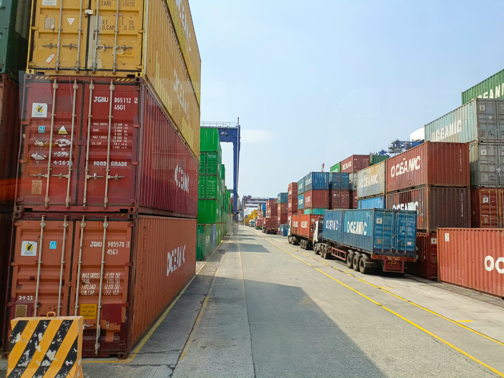

Automation
Automate routine updates, routing and reporting.
Services
Estech designs controlled AI operations workflows that reduce repetitive work in logistics, haulage, freight forwarding, customs, warehousing, and supply chain teams.
Automate routine updates, routing and reporting.
Improve receiving, dispatch and exception visibility.

Reduce milestone chasing and customer status work.
Reduce missing-document delays and repeated reminders.
Structure driver updates, delivery proof and delay escalation.
Automate shipment updates, document reminders, customer follow-up, internal handoffs, and recurring reports.
Digital workers classify requests, summarize information, route tasks, draft updates, and escalate exceptions.
See delayed work, missing documents, unresolved requests, and team workload in real time.
Use approval queues, audit logs, role-based access, and exception rules to keep leadership in control.
Start with a review, select one measurable workflow, run a controlled pilot, then expand.
No. Estech removes repetitive coordination and paperwork so experienced staff can focus on exceptions, customers, and revenue-producing work.
A focused pilot usually takes 2 to 6 weeks after process selection, depending on data access, approvals, and integration complexity.
Usually no. Estech works around your existing tools first, then recommends system changes only when they produce a clear business outcome.
High-risk decisions, exceptions, and customer-sensitive actions can require human approval before completion.